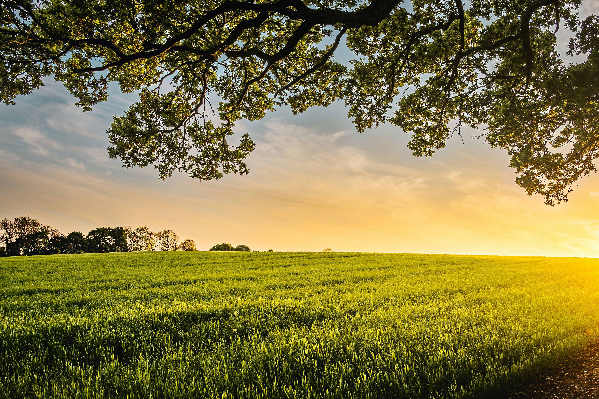
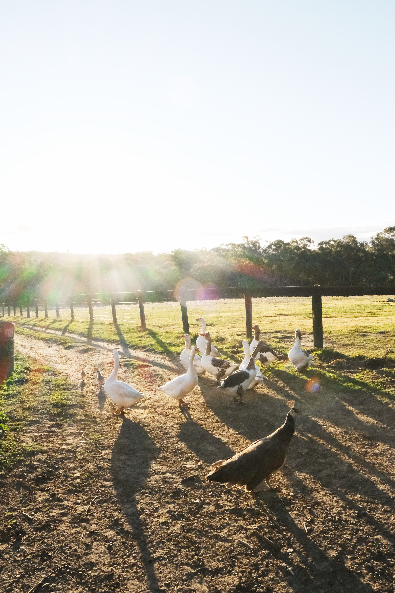
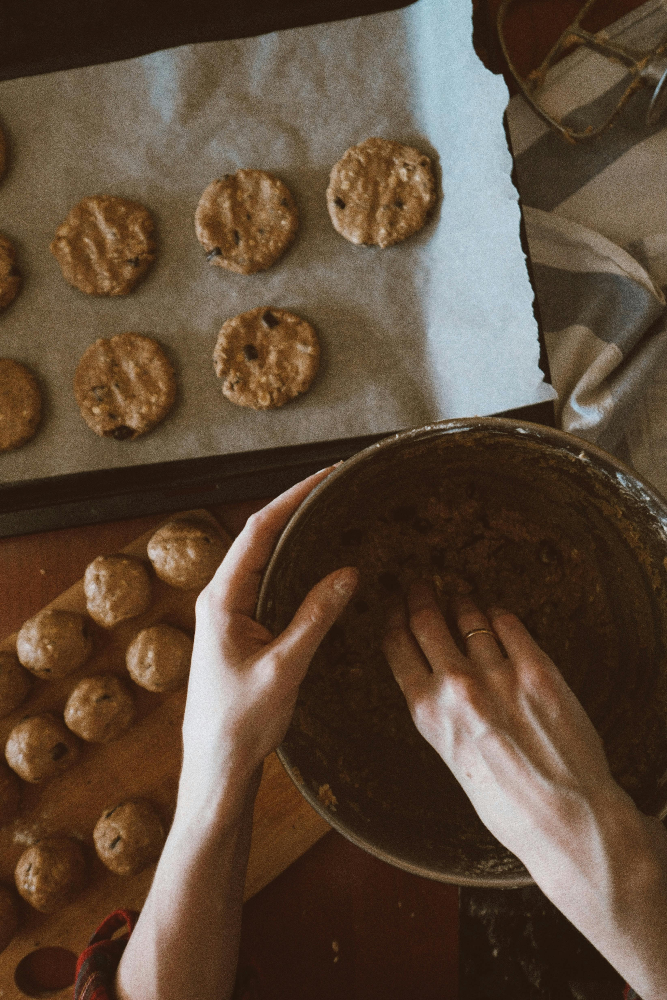
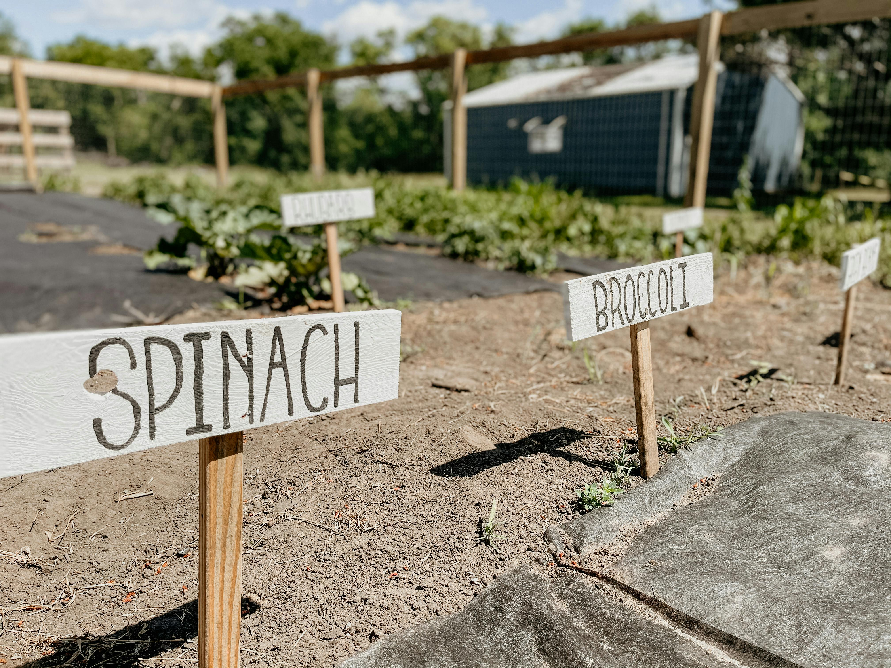
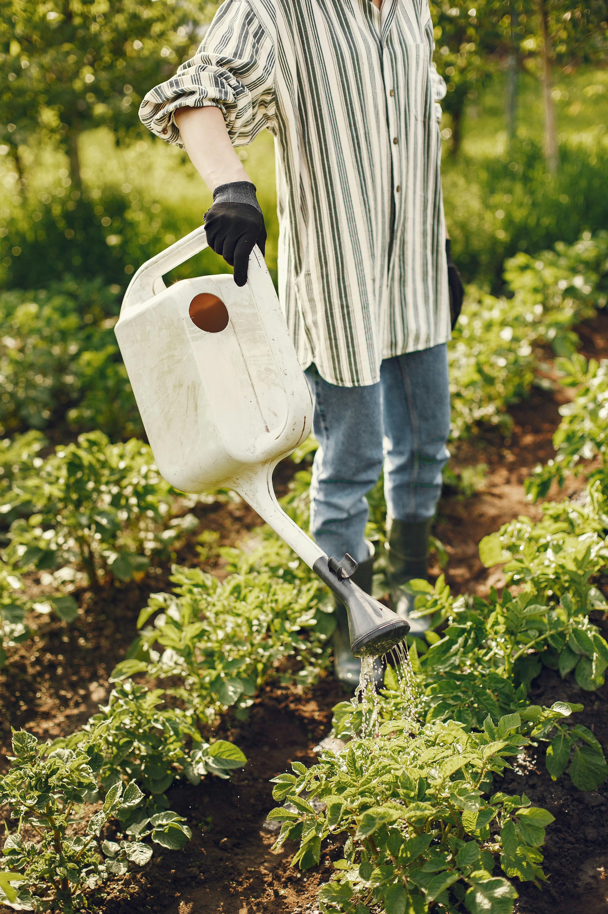
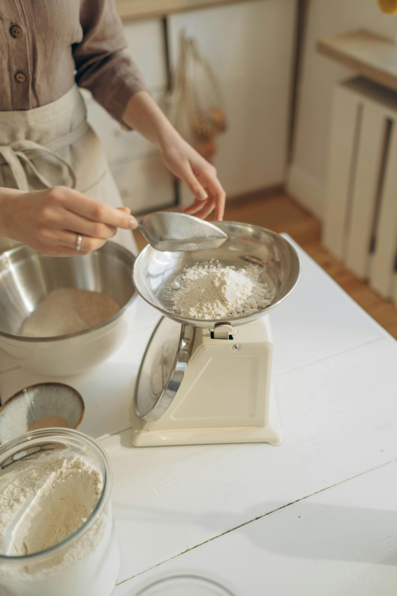
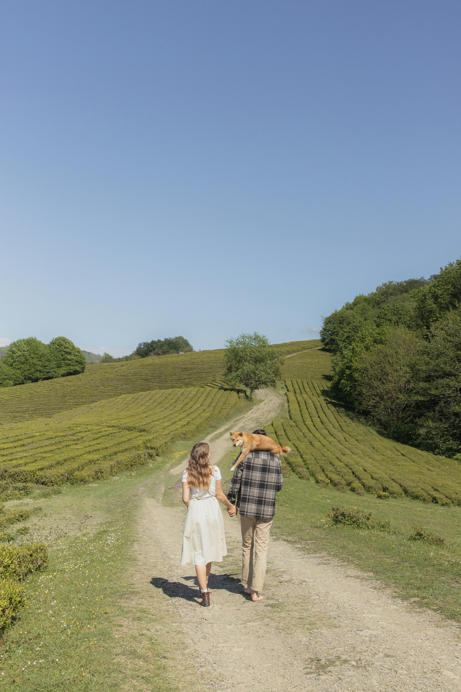

Copper Key Farmstand began with a simple idea: bring fresh, locally grown food straight from the farm to the community. What started as a small roadside stand has grown into a place where neighbors gather, families connect, and quality is never compromised. Rooted in hard work and a love for the land, we take pride in offering seasonal produce, homemade goods, and a welcoming atmosphere that feels like home. Every item we share reflects our commitment to freshness, sustainability, and the belief that the best things are grown close to home.





Behind Copper Key Farmstand are a pair of dedicated farmers who pour their heart into every harvest, rising early and working the land with care and purpose. Their days are spent tending crops, planning each season, and making sure everything brought to the stand meets the highest standard. Never far from their side is Copper, their loyal farm dog and unofficial greeter, who can usually be found trotting through the fields or welcoming visitors with a wagging tail. Together, they’ve created more than just a farmstand, they’ve built a way of life centered on hard work, community, and a genuine love for what they do.
